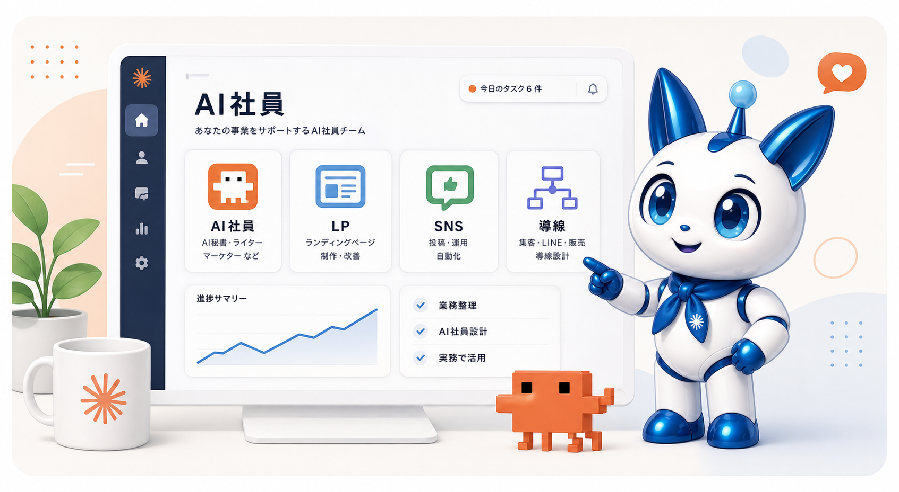
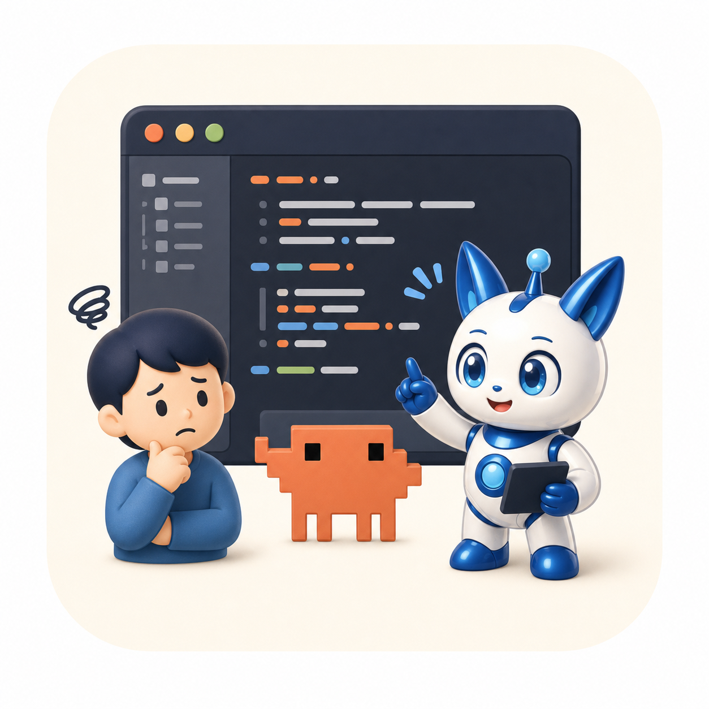
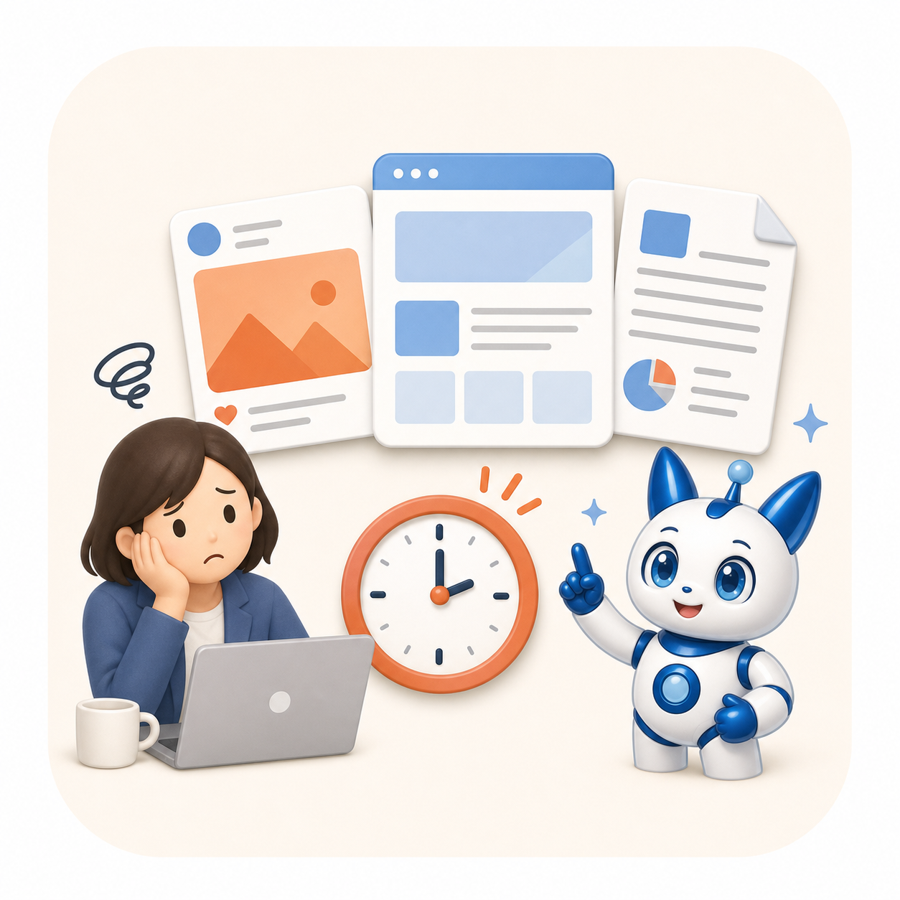

AIを仕事でどう使えばいいかわからない
便利そうなのは分かる。でも、自分の業務にどう落とし込めばいいのかが見えない。
Claude Code研修 / AI社員構築プログラム
Claude Codeを使って、AI秘書・LP制作・SNS運用・集客導線まで。仕事に使えるAI社員チームを一緒に構築します。
無理な勧誘はありません。まずは現状整理だけでも大丈夫です。

Problem
AIを使えていないのは、努力不足ではありません。多くの人がつまずくのは、ツールの操作ではなく「自分の仕事のどこにAIを入れるか」が見えていないことです。
便利そうなのは分かる。でも、自分の業務にどう落とし込めばいいのかが見えない。

すごいと聞いても、プログラミング経験がないと無理なのではと不安になる。

毎回ゼロから考えてしまい、発信や販売準備がなかなか進まない。
人を雇うほどではない。でも、誰かに手伝ってほしい仕事が増えている。
Solution
いきなりツールを使いこなそうとするのではなく、あなたの仕事を整理し、任せる役割を決め、実務で使える形にしていきます。
AIに任せられる仕事を見つける
秘書・ライター・営業など役割を決める
LP、SNS、資料作成に落とし込む
相談・申込につながる流れを整える
Features
ツールの解説だけで終わらせず、毎日の仕事で使うところまで一緒に作ります。
タスク整理、文章の下書き、情報整理を手伝うAI秘書を作ります。
発信して終わりではなく、相談や申込につながる流れを整えます。
難しい開発ツールとしてではなく、仕事を進める実践環境として使います。
専門用語を増やすより、初心者でも分かる順番で進めることを重視します。
Service
まず使える状態へ。次に販売導線へ。最後に事業全体の仕組み化へ。今の段階に合わせて進められます。
7日間
98,000円
まずAIを仕事で使える状態にしたい方向け。
30日間
298,000円
商品設計から販売導線まで整えたい方向け。
60日間
498,000円
AI社員を導入し、事業全体を仕組み化したい方向け。
Community
分からないまま抱え込まないように、質問、進捗共有、週次チェックで実装を前に進めます。
Kohaku Support
今週はLPのCTAとLINE導線をつなげましょう。
Curriculum
まず仕事を整理し、AIに任せる役割を決め、小さな成果物を作りながら、最後にAI社員チームとして仕組み化します。
今の仕事を整理し、AIに任せる業務と自分がやる業務を分けます。
あなたの強み、商品、ターゲットをAIが理解できる形に整理します。
日々の相談、文章下書き、タスク整理を手伝うAI秘書を作ります。
商品価値が伝わる構成とコピーを作り、ページの土台を整えます。
投稿テーマと文章の型を作り、発信を続けやすくします。
SNS、LP、LINE、無料相談をつなげて、迷わない流れを作ります。
秘書、ライター、営業、マーケターなどの役割を分けて使える状態にします。
商品設計、LINE導線、SNS導線、AI営業、AIマーケター、AIリサーチャーまで、事業全体にAI社員を配属していきます。
For You
AIに詳しくなることより、今の仕事を少しでも軽くし、発信や販売準備を進めたい方に向いています。
一人社長・個人事業主として仕事を抱えがち
講師・コーチ・カウンセラーとして発信やLPを整えたい
ChatGPTやClaudeを触ったが、実務利用で止まっている
外注前に、自分でAI活用の土台を持ちたい
AIを使った商品設計や販売導線を作りたい
Voices
以下は掲載イメージです。実際の受講者の声が集まり次第、内容を差し替えて運用します。
SNS投稿と講座案内文をAIと一緒に作れるようになり、発信の手が止まりにくくなりました。
AIに何を任せればいいかが整理でき、LPと無料相談までの流れが見えるようになりました。
Claude Codeへの苦手意識が減り、資料作成や商品設計に使うイメージが持てました。

Support
運営者の人物プロフィール画像は前面に出さず、コハクちゃんを案内役として設計しています。サポートでは、元教師としての分かりやすい伴走、AI社員導入支援、LP・導線設計の視点を組み合わせます。
Free Consultation
今の業務、作りたい商品、発信や集客の課題を整理しながら、どのようなAI社員を作ると効果的かをご提案します。
無料相談でAI社員の作り方を聞く相談だけで終了しても大丈夫です。必要のないプランを無理におすすめすることはありません。